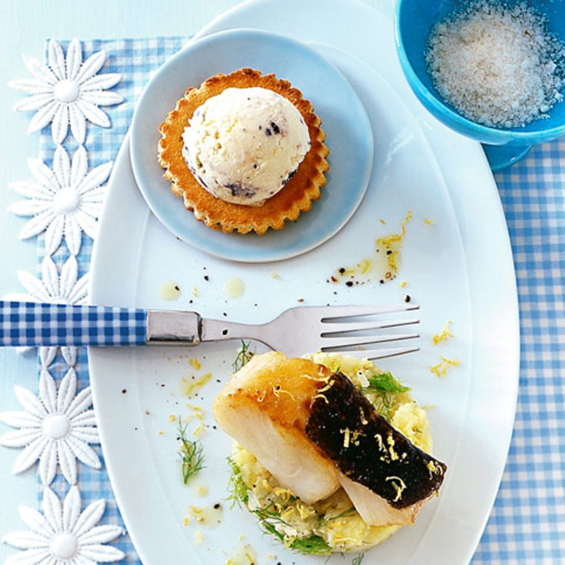

Hallo und Wilkommen auf der Homepage von Inn the Forest! Hier können
sie ganz leicht einen Tisch für unser Restaurant reservieren! Zudem
finden sie alle Informationen auf dieser Seite wie Anfahrt und das
Menü! Wir freuen uns auf Ihren Besuch!
